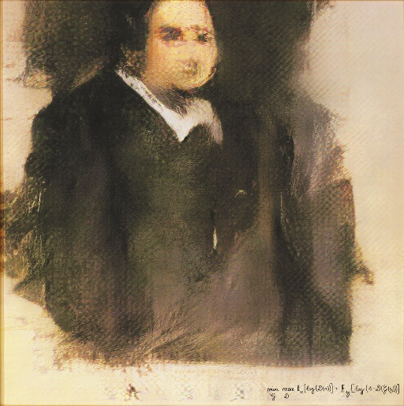

* All images of the experiment combined into one
Chapter Title
Chapter Title
Chapter Title
Tokens represent the smallest meaningful text units in a prompt. While models like CLIP have advanced understanding and generating relationships between text and images, they are not free from bias: CLIP was trained on 400 million image-text pairs scraped from the internet, reflecting biases inherent in online culture, particularly Western (and American) content, where certain subjects dominate (e.g., celebrities or pop culture).
Words linked to certain genders, ethnicities, or professions reflect stereotypes, influencing the model’s outputs. These biases emerge because embeddings mirror word associations in the training data. The training images reflect skewed demographics (e.g., most images of "doctors" showing men), so the model's image embeddings perpetuate such biases. CLIP’s contrastive learning amplified these biases by reinforcing incorrect associations between text and images. For instance, frequent associations of "CEO" with male images cause the model to favor such associations, perpetuating stereotypes.
Efforts to address these biases include curating more diverse datasets, refining tokenization, and adjusting training algorithms, but completely eliminating bias remains challenging given the scale of data required.
or concept:
Chapter Title
Eduardo Navas' concept of meta-creativity describes creativity that transcends human boundaries by incorporating non-human systems such as artificial intelligence (AI) into creative processes. According to Navas, this machine participation expands the potential of creativity and challenges traditional concepts of authorship and artistic genius. It is not necessarily about real creativity, but about the appearance of creativity that machines can generate. This merging of human and machine creativity raises new questions, such as how machine-produced artworks are valued and interpreted.

The sale of an AI-generated portrait for $432,000 at auction in 2018 is one example of how machine-generated works have triggered cultural discussions about recognition and responsibility.Creativity has historically been considered a deeply human ability that involves emotion, intuition, and cultural sensitivity. Immanuel Kant laid the foundation for the modern understanding of artistic genius by seeing creativity as an individual expression of the self. Modernity emphasized originality and a departure from tradition, while postmodernism challenged this view through fragmentation and irony, introducing the concept of the “bricoleur” (someone who constructs new meanings from existing elements).
In metamodernism, a framework that unites modernism and postmodernism, creativity is understood as a balancing act between irony and the search for meaning. This also opens up the discourse to machine creativity, with the boundaries between humans and machines becoming increasingly blurred.
The integration of AI into creative processes leads to co-creativity between humans and machines. The human often functions as a curator, selecting and refining machine-generated results, rather than creating directly. This shift reflects a larger transformation in creative practice, which is no longer just about producing new works, but also about selecting and contextualizing machine-generated content.
While critics such as Margaret Boden argue that machines lack true creativity because they have no emotions or intentions, there are also voices that reject such an anthropocentric view. They encourage us not to consider creativity as an exclusive human privilege, but to also attribute it to non-human actors. This means that creativity can be understood as a flexible, variable system in which machines can reveal creative possibilities by manipulating data in “Latent Space”.
In summary, the use of AI in art presents both technical and philosophical challenges. It is not only a question of how creative machines can be, but also how the human contribution is redefined by the curation and contextualization of machine works. AI generates “readymades” in real time and enables parallel creative processes that transcend traditional linear methods. This leads to a new aesthetic that is strongly influenced by the underlying training data and cultural contexts, establishing machine creativity as part of a broader social dialogue.
Experiment Title
Imprint
This website is part of Benjamin Bertram's master thesis in design and illustration at HAW Hamburg, Faculty of Design.
You can download the master thesis in German or in English.
You can also directly chat with the master thesis via this custom GPT.
The token library may contain explicit or triggering images. Due to the process of rendering each token with the same settings, the results are presented as they are and not cherry-picked to give a better understanding of the capabilities of the text encoder.
 LinkedIn
LinkedIn
 GitHub
GitHub
 Instagram
Instagram
 benjaminbertram.com
benjaminbertram.com
I would like to thank my examiners Prof. Peter Kabel and Prof. Dr. Michaela Diener as well as Andreas Blattman, Robin Rombach and the team of StabilityAI (and now Black Forest Labs) for their contributions to latent and stable diffusion, Emad Mostaque for open-sourcing this transformative technology, Antoni Romanov and Julian Heinken for their encouragement in my coding journey, r/stablediffusion and u/lostinspaz for tons of inspiration, the team of cogniwerk.ai for their hard work and great insights into turning abstract code into a usable service, Dr. Marshal Brain, Dr. Liat Lavi, Barak, Guy and Ori for broadening my horizons, and Markus Rockstroh, Ella Amara, Nora Weigel, Safa Beluchi, Huthifa Khershi for always believing in me and supporting me. You guys rock!
Hamburg, 18.10.2024